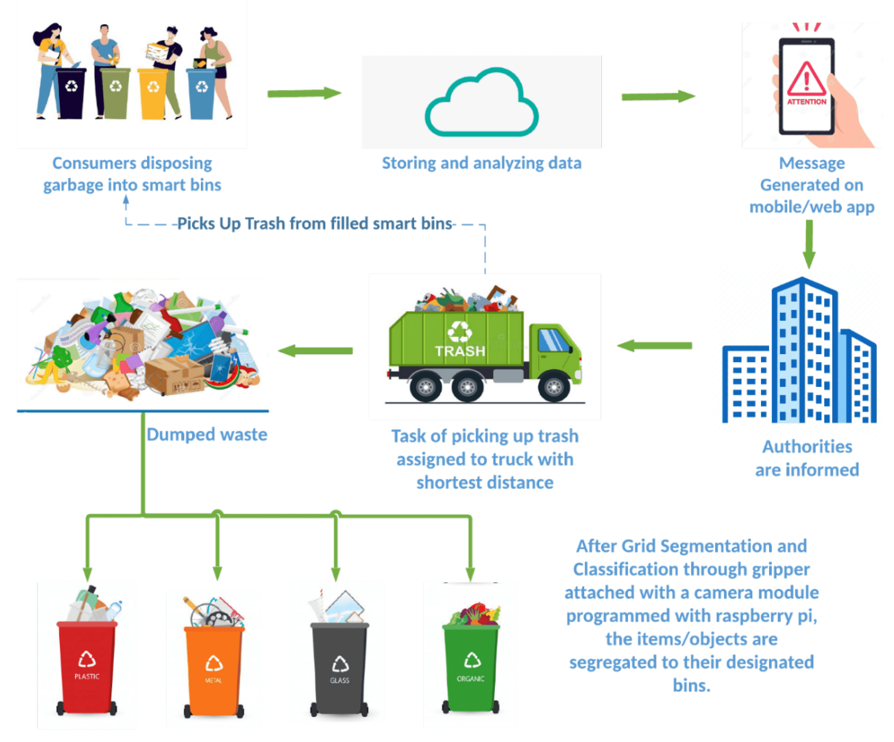
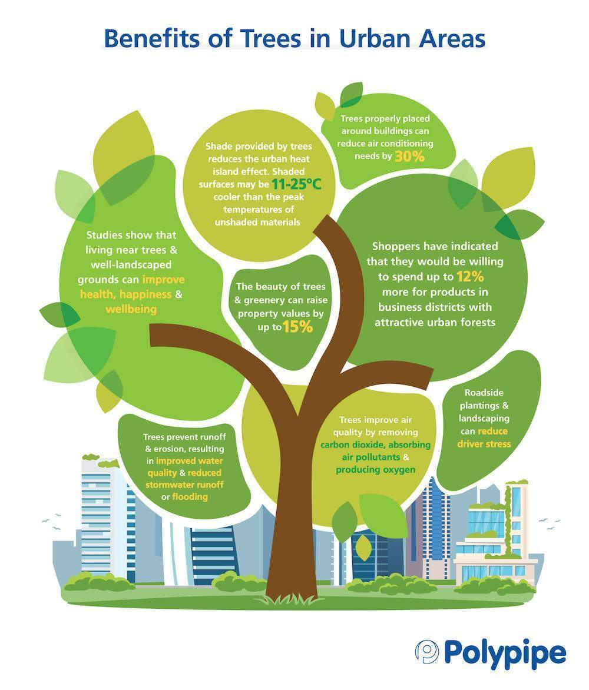
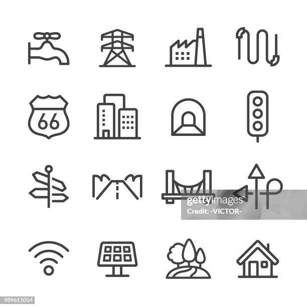

Smart Waste Management uses technology to improve the collection, sorting, and recycling of garbage in urban areas. Instead of relying only on fixed schedules, smart bins equipped with sensors can detect when they are full and notify city workers in real time. This prevents overflowing bins and reduces unnecessary collection trips, saving fuel and time.In addition, cities can use GPS tracking for waste trucks to plan efficient routes and avoid traffic, ensuring quicker garbage disposal. Data analytics can also help monitor which areas generate more waste and need better recycling programs. With public awareness campaigns, citizens can also learn how to reduce, reuse, and recycle effectively.Smart waste systems create a cleaner, healthier environment while lowering costs and improving sustainability in modern cities.

Clean air and proper sanitation are essential for a healthy city. To reduce air pollution, smart cities promote the use of public transportation, electric vehicles, and green spaces like parks and trees that naturally filter the air. Limiting industrial emissions and encouraging cycling or walking also help keep the air clean and fresh.Better sanitation means building clean public toilets, proper sewage systems, and efficient drainage to prevent waterlogging and the spread of diseases. Smart sensors can monitor sanitation facilities and alert city workers when maintenance is needed.Together, clean air and improved sanitation make urban areas healthier, more livable, and safer for everyone, especially children and the elderly.
Digital education is key to preparing students for the future. In smart cities, schools are equipped with modern tools like smart boards, computers, and internet access to make learning more interactive and effective. These technologies help students understand subjects better and encourage creative thinking.To make sure everyone benefits, online learning platforms and free digital resources should be available for students in rural or low-income areas. Providing devices like tablets and training teachers to use digital tools also ensures that no child is left behind.By improving digital education, cities can offer equal learning opportunities, support lifelong learning, and build a smarter, more skilled generation.

Upgrading subsurface facilities involves modernizing underground infrastructure—such as oil wells, mining shafts, or geothermal systems—with advanced technology to boost efficiency, safety, and sustainability. By integrating smart sensors, automated controls, and real-time monitoring, operators can detect leaks, optimize production, and prevent equipment failures before they occur. Data analytics and AI help predict reservoir performance, allowing for better resource management, while robotics and drones enable safer inspections in hard-to-reach areas. These upgrades not only extend the lifespan of subsurface assets but also reduce environmental risks and operational costs, ensuring more reliable and eco-friendly energy and resource extraction.